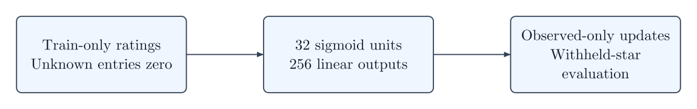
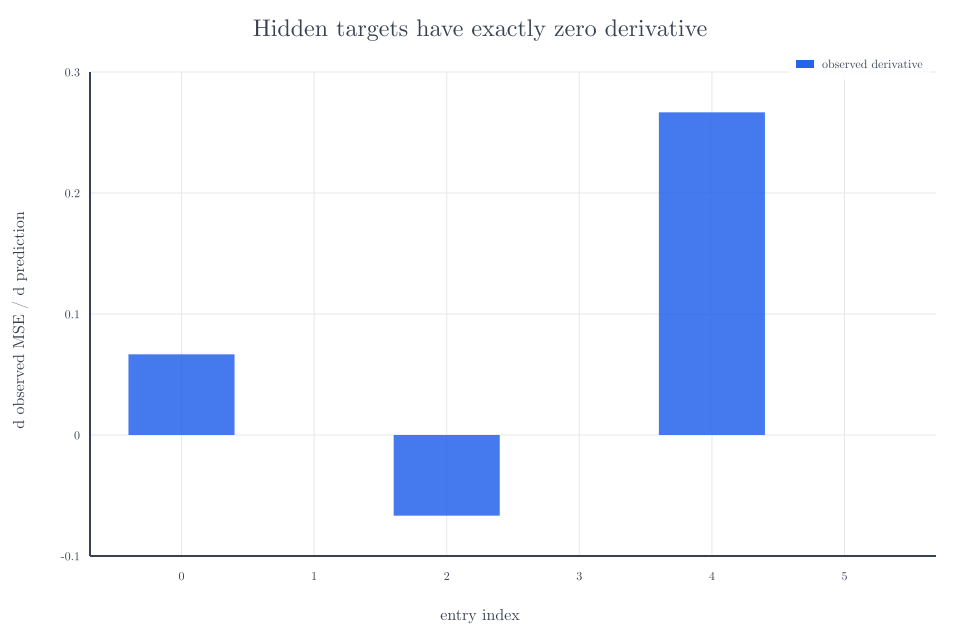
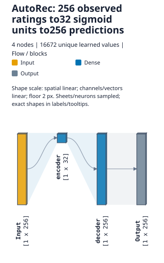
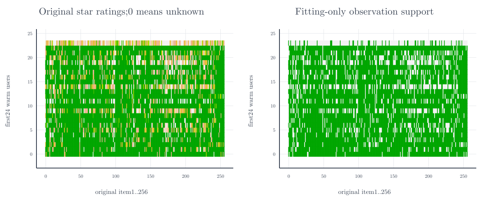
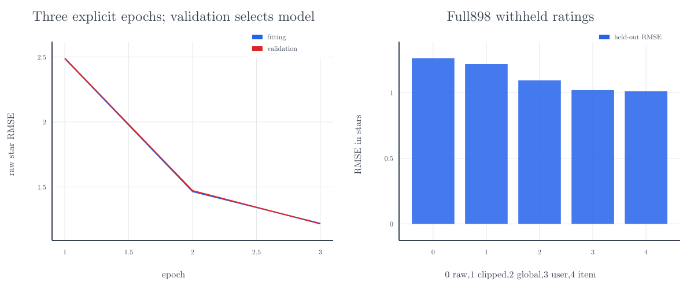
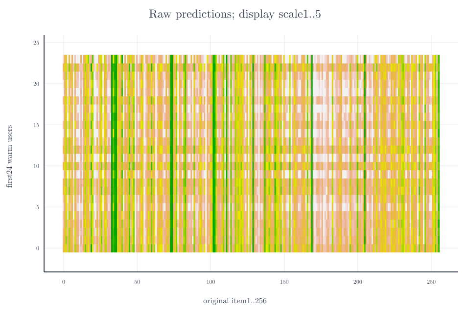

AutoRec: Reconstruct Observed Ratings Without Inventing Negatives
Abstract
A warm-user autoencoder reconstructs MovieLens ratings using only training observations. Native tensors keep missing entries out of the loss, while explicit Adam updates, validation-only selection and fitting-only baselines expose what this short model learns.
Observed ratings are different from negative preferences
A zero input means unknown or withheld, not a zero-star target. The original U-AutoRec teaching network maps 256 normalized ratings through 32 sigmoid units to 256 unconstrained outputs. Training minimizes squared error only at observed fitting positions, plus 0.00005 times the two weight-matrix squared norms. Biases are excluded from that regularizer. Predictions use only training ratings; no validation/test target or mask enters the forward pass.
#include <dm/dm.hpp>
int main() {
std::filesystem::create_directories("build");
std::filesystem::create_directories("build");
dm::graphics::Diagram d(28, 1150);
dm::graphics::DiagramNodeStyle style;
style.width = 11;
style.height = 5;
style.font_size = 27;
d.node("input", {-16, 0}, "Train-only ratings\nUnknown entries zero", style)
.node("code", {0, 0}, "32 sigmoid units\n256 linear outputs", style)
.node("score", {16, 0}, "Observed-only updates\nWithheld-star evaluation", style);
d.edge("input", "code").edge("code", "score");
d.save_svg("build/autorec_method.svg");
}
The three-epoch budget, parameter seed4603, batch-order seed4621, batch size32 and Adam learning rate0.003 follow the original executable. All199 warm users appear once per epoch, giving21 updates. This is a bounded teaching experiment, not an official MovieLens benchmark or a cold-start recommendation system.
A six-entry calculation before fitting
Only entries0,2,4 are observed. Their squared errors sum to0.18, so the loss is 0.06. Changing every hidden target to1000 leaves the result exactly unchanged; all three hidden output derivatives are exactly zero. Dividing by all six entries would halve the objective and silently change the optimization problem.
#include <dm/dm.hpp>
int main() {
std::filesystem::create_directories("build");
namespace n = dm::nn;
namespace m = n::models;
auto prediction =
n::from_vector(std::vector<float>{.2f, .3f, .4f, .5f, .6f, .7f}, {2, 3}).requires_grad_();
const auto target = n::from_vector(std::vector<float>{.1f, .9f, .5f, .7f, .2f, .8f}, {2, 3}),
mask = n::from_vector(std::vector<float>{1, 0, 1, 0, 1, 0}, {2, 3});
const auto changed = n::where(n::equal(mask, 1.), target, 1000.);
const auto loss = m::ObservedRatingMse(prediction, target, mask),
altered = m::ObservedRatingMse(prediction, changed, mask);
const auto gradient = n::grad(loss, {prediction})[0];
if (std::abs(loss.item() - .06) > 2e-8 || loss.item() != altered.item() ||
n::sum(n::abs(gradient) * (1. - mask)).item() != 0)
return 1;
n::save_npz("build/autorec_mask_algebra.npz",{{"prediction",prediction.detach()},{"target",target},{"mask",mask},{"changed_target",changed},{"loss",loss.detach()},{"changed_loss",altered.detach()},{"gradient",gradient}});
std::print(
"Observed-only MSE {:.8f}; hidden-target change {:.1f}.\n| entry | observed | gradient "
"|\n|---:|---:|---:|\n",
loss.item(),
altered.item() - loss.item());
for (int i = 0; i < 6; ++i)
std::print(
"| {} | {} | {:.8f} |\n",
i,
mask.reshape({6}).to_vector<float>()[i],
gradient.reshape({6}).to_vector<float>()[i]);
auto a = dm::graphics::RPlot::create();
a.bars(
{0, 1, 2, 3, 4, 5},
gradient.reshape({6}).to_vector<double>(),
"observed derivative",
{37, 99, 235})
.title("Hidden targets have exactly zero derivative")
.x_label("entry index")
.y_label("d observed MSE / d prediction");
a.save_svg("build/autorec_mask.svg");
}Observed-only MSE 0.06000001; hidden-target change 0.0.
| entry | observed | gradient |
|---|---|---|
| 0 | 1 | 0.06666667 |
| 1 | 0 | 0.00000000 |
| 2 | 1 | -0.06666666 |
| 3 | 0 | 0.00000000 |
| 4 | 1 | 0.26666671 |
| 5 | 0 | 0.00000000 |

The actual 16,672-parameter graph
The plot traces the native forward path. A store owns encoder/W, encoder/b, decoder/W and decoder/b; the output handles retain live derivative paths. The model component has no optimizer, target or implicit update method.
#include <dm/dm.hpp>
int main() {
std::filesystem::create_directories("build");
namespace n = dm::nn;
n::ParameterStore parameters(4603);
n::Module model(
[&](const n::Tensor& x) { return n::models::AutoRec(parameters, x).prediction; },
"AutoRec: 256 observed ratings to32 sigmoid units to256 predictions");
n::ModelPlotOptions options;
options.style = n::ModelPlotStyle::Flow;
options.detail = n::ModelPlotDetail::Blocks;
options.labels = {.type = n::ModelPlotLabel::NameAndShape, .size = 12, .wrap = 24};
const auto graph = model.plot(n::zeros({1, 256}), options);
graph.save_svg("build/autorec_architecture.svg");
if (parameters.count() != 16672 || parameters.size() != 4)
return 1;
std::print("{} learned scalars in{} tensors.\n", parameters.count(), parameters.size());
}16672 learned scalars in4 tensors.

Original-source ratings and an explicit native partition
The checksummed original MovieLens100K archive contains100,000 ratings from943 users on1682 items. We retain users1..256 with at least10 observations among items1..256:199 users and256 items. Per user, the native seed4601 shuffles observed item indices, assigns floor(n/10) to validation and the next floor(n/10) to test, and fits the rest. The resulting supports are8079/898/898. User and item IDs remain original IDs; every prepared rating is checked against u.data. Held-out inputs are exactly zero, while withheld targets remain available only for evaluation.
The original external preparation archive is unavailable. The manifest records this canonical native partition and its RNG; external split or TensorFlow numerical parity is not asserted. An existing preparation can be inspected and supplied through the standard dataset cache. No Python preparation or external checkout is needed. These are warm users and warm items: every retained item has fitting support.
#include <dm/dm.hpp>
int main() {
std::filesystem::create_directories("build");
namespace n = dm::nn;
namespace m = n::models;
const auto root = dm::datasets::prepare_example_data("autorec");
const auto data = m::LoadAutoRec(root);
std::print(
"Source{}; rows{},items{}; observed fit/validation/test{}/{}/{}.\n",
root,
data.input.size(0),
data.input.size(1),
n::sum(data.train).item(),
n::sum(data.validation).item(),
n::sum(data.test).item());
const auto first = n::slice_axis(data.ratings, 0, 0, 24),
support = n::slice_axis(data.train, 0, 0, 24);
auto a = n::plot_tensor_map(first.to(n::DType::Float64), 0, 5),
b = n::plot_tensor_map(support.to(n::DType::Float64), 0, 1);
a.title("Original star ratings;0 means unknown")
.x_label("original item1..256")
.y_label("first24 warm users");
b.title("Fitting-only observation support")
.x_label("original item1..256")
.y_label("first24 warm users");
auto layout = dm::graphics::RLayout::create(1, 2);
layout.add(a).add(b).size(1200, 500).fit_panels().save_svg("build/autorec_data.svg");
}Source/home/jordan/.cache/datamunge/datasets/autorec; rows199,items256; observed fit/validation/test8079/898/898.

Visible three-epoch fitting and fresh deployment
Each minibatch performs native forward inference, observed-only reconstruction, explicit weight-only L2, gradients and one Adam step. The best raw validation RMSE selects the checkpoint; test ratings do not choose an epoch. The fresh store restores model arrays only. Repeated inference, single/batch agreement and parameter immutability are checked before held-out scoring. Restoring this checkpoint does not resume the optimizer state.
The complete program below also fits global, user-shrink10 and item-shrink10 references from fitting observations alone. Raw outputs are multiplied by five for star-valued metrics. Clipping to1..5 is a separate metric-only comparison. Saved arrays retain unconstrained values and every hidden/observed mask.
#include <dm/dm.hpp>
namespace n = dm::nn;
namespace m = n::models;
int main() {
std::filesystem::create_directories("build");
n::set_num_threads(2);
std::filesystem::create_directories("build");
const auto root = dm::datasets::prepare_example_data("autorec");
const auto data = m::LoadAutoRec(root);
n::save_npz(
"build/autorec_data.npz",
{{"input", data.input},
{"ratings", data.ratings},
{"train_mask", data.train},
{"validation_mask", data.validation},
{"test_mask", data.test},
{"user_ids", data.users},
{"item_ids", data.items}});
n::ParameterStore parameters(4603);
{
n::NoGradGuard guard;
m::AutoRec(parameters, n::zeros({1, 256}));
}
auto arrays = [&]() {
n::NamedTensors a;
for (std::size_t i = 0; i < parameters.size(); ++i)
a.push_back({parameters.names()[i], parameters.parameters()[i].detach().clone()});
return a;
};
n::save_npz("build/autorec_initial_arrays.npz", arrays());
n::OptimizerConfig config;
config.kind = n::OptimizerKind::Adam;
n::Optimizer optimizer(parameters, .003, config);
n::BatchOrder order(199, 32, 4621);
int steps = 0, selected = 0;
double best = INFINITY;
std::vector<double> epochs, training, validation, validation_mae;
std::print(
"| epoch | train raw RMSE | validation raw RMSE | validation raw MAE "
"|\n|---:|---:|---:|---:|\n");
for (int epoch = 1; epoch <= 3; ++epoch) {
order.begin_epoch();
int seen = 0;
for (;;) {
const auto rows = order.next();
if (rows.empty())
break;
seen += int(rows.size());
const auto x = n::take_rows(data.input, rows), mask = n::take_rows(data.train, rows);
const auto out = m::AutoRec(parameters, x);
const auto observed = m::ObservedRatingMse(out.prediction, x, mask);
const auto regularizer = .00005 * (n::sum(n::square(parameters.at("encoder/W"))) +
n::sum(n::square(parameters.at("decoder/W"))));
const auto objective = observed + regularizer;
const auto gradients = n::grad(objective, parameters.parameters());
for (const auto& g : gradients)
if (!n::all(n::is_finite(g)).item<bool>() || n::sum(n::abs(g)).item() == 0)
return 1;
if (steps == 0) {
n::save_npz("build/autorec_first_batch.npz", {{"input", x}, {"mask", mask}});
n::save_npz(
"build/autorec_first_forward.npz",
{{"code", out.code},
{"prediction", out.prediction},
{"observed_mse", observed},
{"regularizer", regularizer},
{"loss", objective}});
n::NamedTensors saved;
for (std::size_t j = 0; j < gradients.size(); ++j)
saved.push_back({parameters.names()[j], gradients[j]});
n::save_npz("build/autorec_first_gradients.npz", saved);
}
optimizer.step(gradients);
if (steps == 0)
n::save_npz("build/autorec_first_update_arrays.npz", arrays());
++steps;
}
if (seen != 199)
return 1;
n::NoGradGuard guard;
const auto prediction =
m::AutoRec(parameters, data.input).prediction.to(n::DType::Float64) * 5.;
const auto fit = m::RatingErrors(prediction, data.ratings, data.train),
val = m::RatingErrors(prediction, data.ratings, data.validation);
const double rmse = n::select(val, 0, 0).item();
epochs.push_back(epoch);
training.push_back(n::select(fit, 0, 0).item());
validation.push_back(rmse);
validation_mae.push_back(n::select(val, 0, 1).item());
n::save_npz("build/autorec_epoch" + std::to_string(epoch) + "_arrays.npz", arrays());
if (rmse < best) {
best = rmse;
selected = epoch;
parameters.save("build/autorec_best.npz");
}
std::print(
"| {} | {:.9f} | {:.9f} | {:.9f} |\n", epoch, training.back(), rmse, validation_mae.back());
}
n::ParameterStore deployed(4603);
{
n::NoGradGuard guard;
m::AutoRec(deployed, n::zeros({1, 256}));
}
deployed.load("build/autorec_best.npz");
const auto before = deployed.flatten();
n::NoGradGuard guard;
const auto out = m::AutoRec(deployed, data.input), repeat = m::AutoRec(deployed, data.input);
const auto one = m::AutoRec(deployed, n::take_rows(data.input, {0}));
if (n::max(n::abs(out.prediction - repeat.prediction)).item() != 0 ||
before != deployed.flatten() ||
n::max(n::abs(one.prediction - n::slice_axis(out.prediction, 0, 0, 1))).item() > 2e-6)
return 1;
const auto stars = out.prediction.to(n::DType::Float64) * 5.;
if (std::abs(
n::select(m::RatingErrors(stars, data.ratings, data.validation), 0, 0).item() - best) >
1e-9)
return 1;
const auto target = data.ratings.to(n::DType::Float64), mask = data.train.to(n::DType::Float64);
const auto global = n::sum(target * mask) / n::sum(mask);
const auto user =
(n::sum(target * mask, {1}, true) + 10. * global) / (n::sum(mask, {1}, true) + 10.);
const auto item =
(n::sum(target * mask, {0}, true) + 10. * global) / (n::sum(mask, {0}, true) + 10.);
const auto global_values = n::ones_like(target) * global,
user_values = n::ones_like(target) * user, item_values = n::ones_like(target) * item;
std::vector<double> rmses, maes;
std::print(
"Selected epoch{},{} explicit updates; immutable fresh deployment.\n| predictor | test RMSE "
"| test MAE |\n|---|---:|---:|\n",
selected,
steps);
for (const auto& [name, pred] : std::vector<std::pair<std::string, n::Tensor>>{
{"raw AutoRec", stars},
{"clipped AutoRec", n::clip(stars, 1., 5.)},
{"fit global", global_values},
{"fit user shrink10", user_values},
{"fit item shrink10", item_values}}) {
const auto score = m::RatingErrors(pred, target, data.test);
const auto values = score.to_vector<double>();
rmses.push_back(values[0]);
maes.push_back(values[1]);
std::print("| {} | {:.9f} | {:.9f} |\n", name, values[0], values[1]);
}
n::save_npz(
"build/autorec_outputs.npz",
{{"prediction", out.prediction},
{"code", out.code},
{"ratings", data.ratings},
{"train_mask", data.train},
{"validation_mask", data.validation},
{"test_mask", data.test},
{"global_baseline", global_values},
{"user_baseline", user_values},
{"item_baseline", item_values},
{"test_rmse", n::from_vector(rmses)},
{"test_mae", n::from_vector(maes)}});
n::save_npz("build/autorec_model_arrays.npz", [&]() {
n::NamedTensors a;
for (std::size_t i = 0; i < deployed.size(); ++i)
a.push_back({deployed.names()[i], deployed.parameters()[i]});
return a;
}());
auto a = dm::graphics::RPlot::create(), b = dm::graphics::RPlot::create();
a.lines(epochs, training, "fitting", {37, 99, 235})
.lines(epochs, validation, "validation", {220, 38, 38})
.title("Three explicit epochs; validation selects model")
.x_label("epoch")
.y_label("raw star RMSE");
b.bars({0, 1, 2, 3, 4}, rmses, "held-out RMSE", {37, 99, 235})
.title("Full898 withheld ratings")
.x_label("0 raw,1 clipped,2 global,3 user,4 item")
.y_label("RMSE in stars");
auto layout = dm::graphics::RLayout::create(1, 2);
layout.add(a).add(b).size(1200, 500).fit_panels().save_svg("build/autorec_training.svg");
const auto truth = n::slice_axis(target, 0, 0, 24), pred = n::slice_axis(stars, 0, 0, 24);
auto heat = n::plot_tensor_map(pred, 1, 5);
heat.title("Raw predictions; display scale1..5")
.x_label("original item1..256")
.y_label("first24 warm users");
heat.save_svg("build/autorec_predictions.svg");
std::print(
"The heatmap display range does not clamp saved predictions or raw metrics.\n| user | item | "
"held-out stars | raw prediction | item reference |\n|---:|---:|---:|---:|---:|\n");
const auto heldout = data.test.to_vector<float>(), ratings = data.ratings.to_vector<float>();
const auto predictions = stars.to_vector<double>(), baseline = item_values.to_vector<double>();
const auto ids = data.users.to_vector<int>();
int shown = 0;
for (int u = 0; u < 199 && shown < 16; ++u)
for (int i = 0; i < 256 && shown < 16; ++i)
if (heldout[u * 256 + i]) {
std::print(
"| {} | {} | {} | {:.9f} | {:.9f} |\n",
ids[u],
i + 1,
ratings[u * 256 + i],
predictions[u * 256 + i],
baseline[u * 256 + i]);
++shown;
}
std::filesystem::copy_file("build/autorec_training.svg","build/export_autorec_training.svg",std::filesystem::copy_options::overwrite_existing);
}| epoch | train raw RMSE | validation raw RMSE | validation raw MAE |
|---|---|---|---|
| 1 | 2.487285576 | 2.490824864 | 2.105360225 |
| 2 | 1.464130111 | 1.471869744 | 1.159170699 |
| 3 | 1.219689269 | 1.215937858 | 0.937455178 |
Selected epoch3,21 explicit updates; immutable fresh deployment.
| predictor | test RMSE | test MAE |
|---|---|---|
| raw AutoRec | 1.262435528 | 0.992568725 |
| clipped AutoRec | 1.217009348 | 0.944044683 |
| fit global | 1.093111044 | 0.899257913 |
| fit user shrink10 | 1.019245451 | 0.811568600 |
| fit item shrink10 | 1.010202607 | 0.809229293 |
The heatmap display range does not clamp saved predictions or raw metrics.
| user | item | held-out stars | raw prediction | item reference |
|---|---|---|---|---|
| 1 | 1 | 5 | 4.718384743 | 3.866505756 |
| 1 | 4 | 3 | 5.482864976 | 3.845471284 |
| 1 | 24 | 3 | 5.284017920 | 3.609110038 |
| 1 | 42 | 5 | 6.243216991 | 3.988719503 |
| 1 | 61 | 4 | 3.023060262 | 3.799210073 |
| 1 | 62 | 3 | 4.091325104 | 3.445217760 |
| 1 | 94 | 2 | 3.764588833 | 3.293961711 |
| 1 | 100 | 5 | 4.382345974 | 4.231786736 |
| 1 | 105 | 2 | 2.671639025 | 2.940942567 |
| 1 | 115 | 5 | 2.107301652 | 3.689329237 |
| 1 | 117 | 3 | 4.361762702 | 3.611425833 |
| 1 | 123 | 4 | 3.011999726 | 3.373632955 |
| 1 | 140 | 1 | 3.883156776 | 3.344664619 |
| 1 | 145 | 2 | 2.908580005 | 2.662846437 |
| 1 | 159 | 3 | 4.377516210 | 3.703304864 |
| 1 | 171 | 5 | 5.350788832 | 3.884886743 |

#include <dm/dm.hpp>
int main() {
std::filesystem::create_directories("build");
std::filesystem::copy_file(
"build/autorec_predictions.svg",
"build/autorec_predictions_export.svg",
std::filesystem::copy_options::overwrite_existing);
}
What the short fit establishes
The executed tables report the selected model and fitting-only references on all 898 withheld ratings. A lower reconstruction loss alone does not establish a better recommender: compare raw/clipped RMSE and MAE against the three references. The sparse observed-rating objective avoids treating unknown entries as dislikes, but it does not model exposure bias or solve cold start. The heatmap shows every item for the first24 users; the printed examples follow source user/item order without selecting attractive predictions. All arrays retain the complete199-user outputs, masks and original identities.
References
- Sedhain et al. (2015), [AutoRec: Autoencoders Meet Collaborative Filtering](https://doi.org/10.1145/2740908.2742726).
- GroupLens, [MovieLens100K original data and licence](https://grouplens.org/datasets/movielens/100k/).
- Native contracts:
dm::nn::models::AutoRec,ObservedRatingMse,LoadAutoRecandRatingErrorsininclude/datamunge/nn/autorec.hpp.